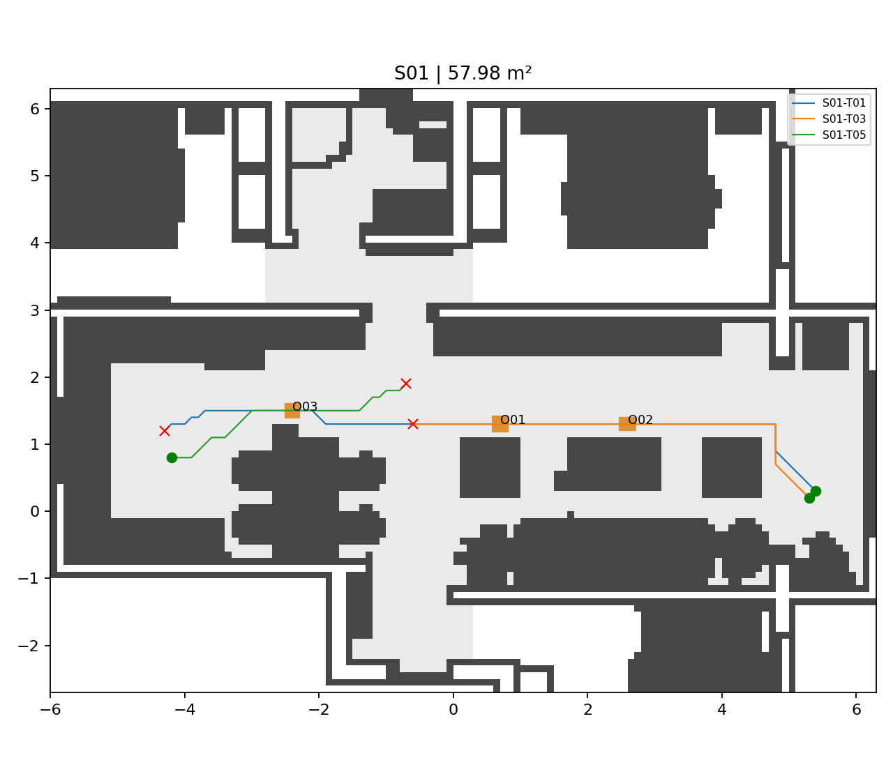
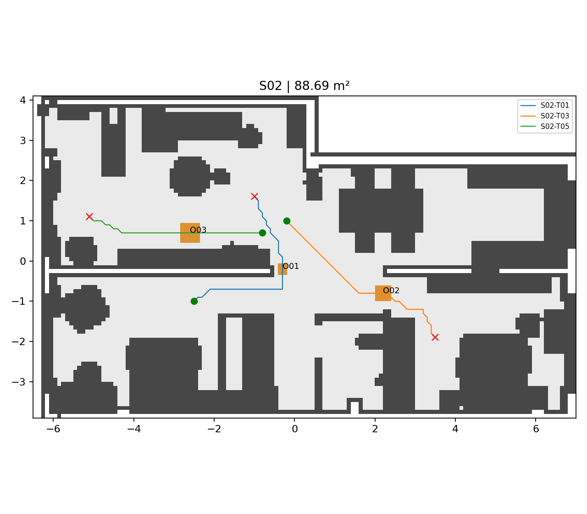
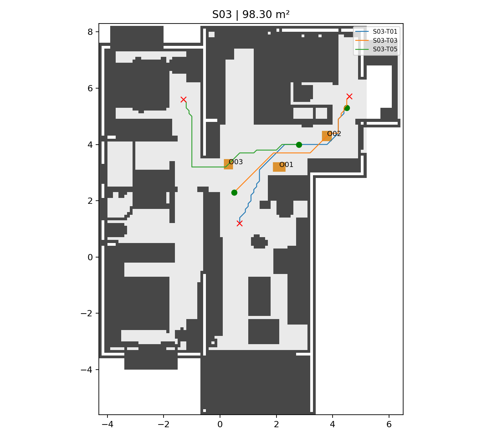
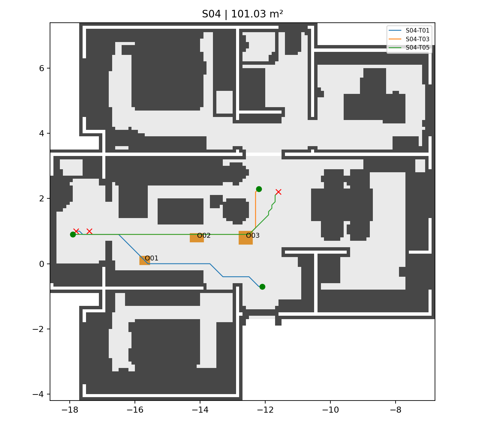
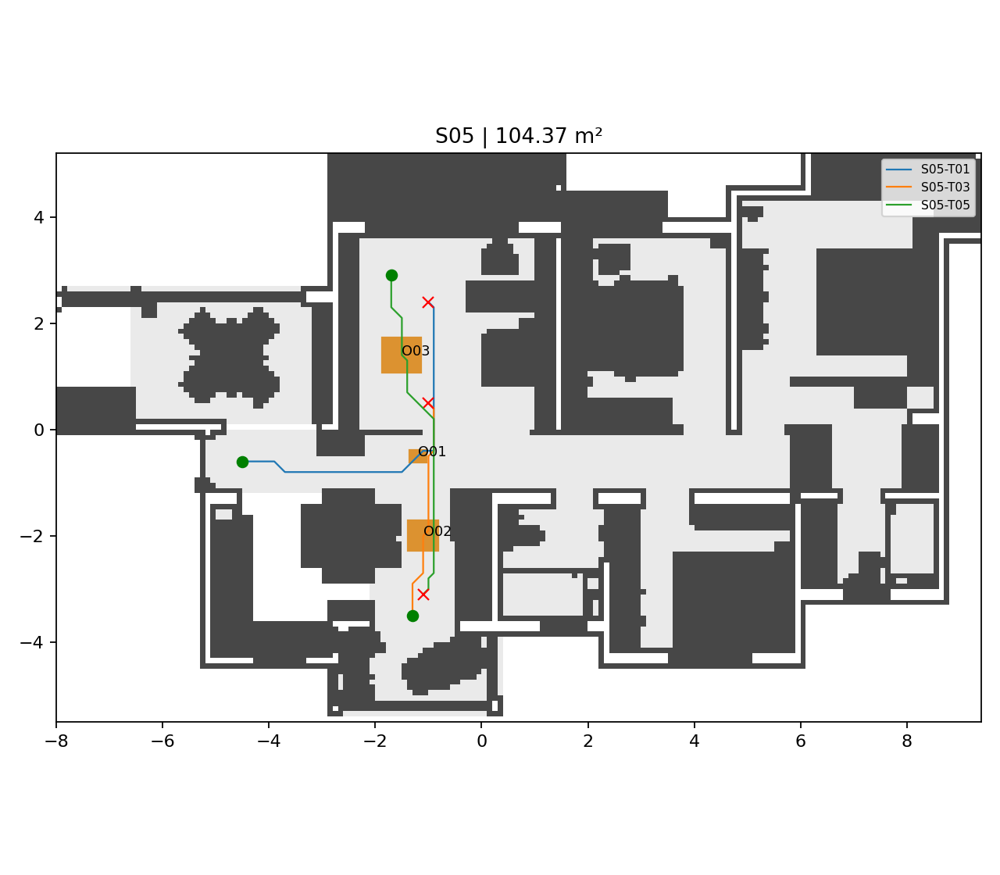
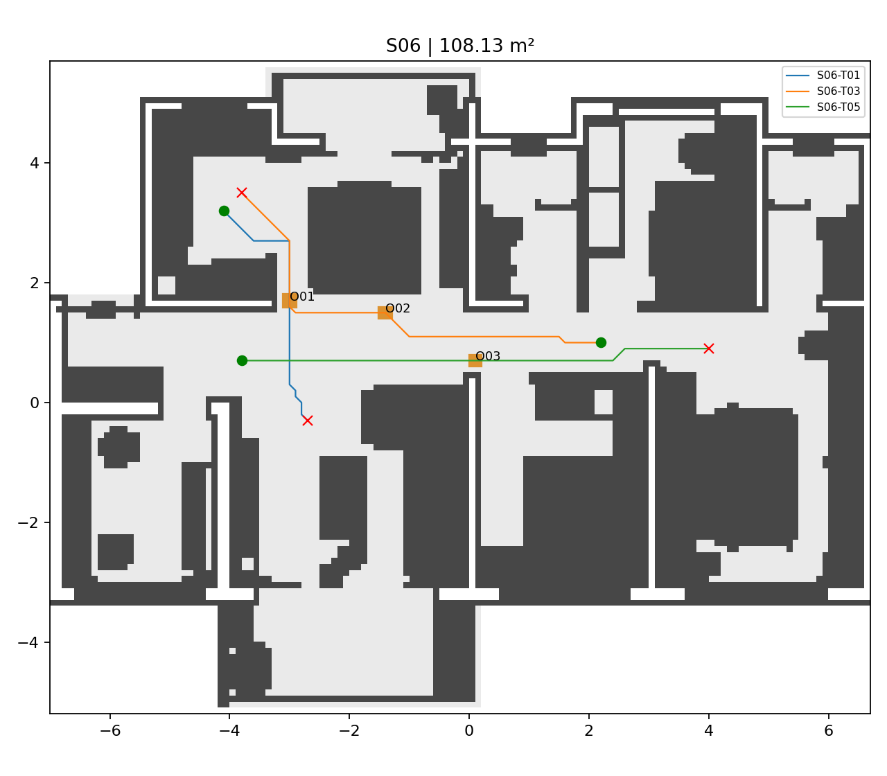
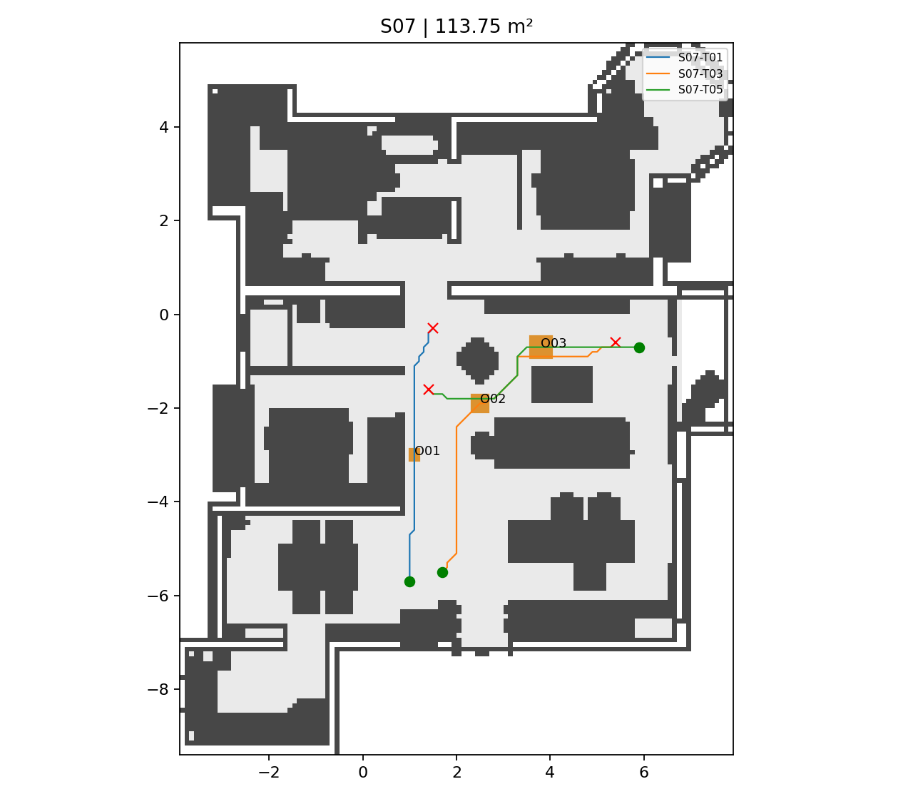
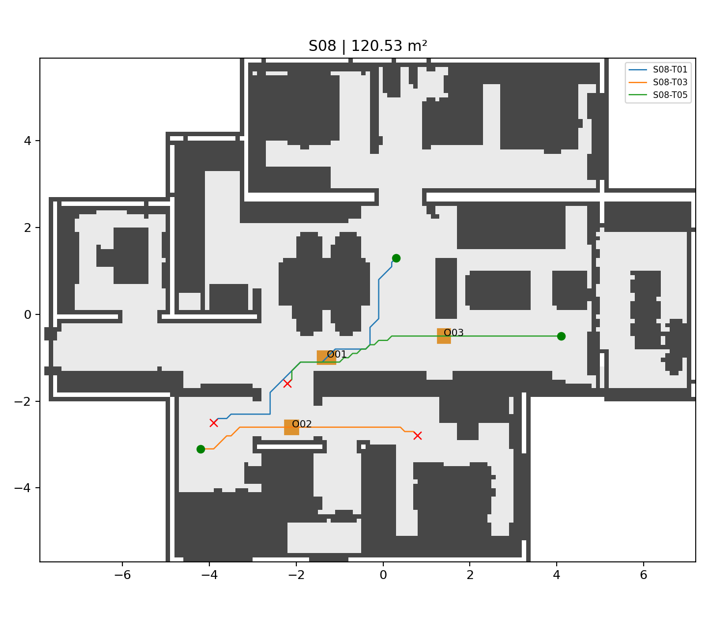
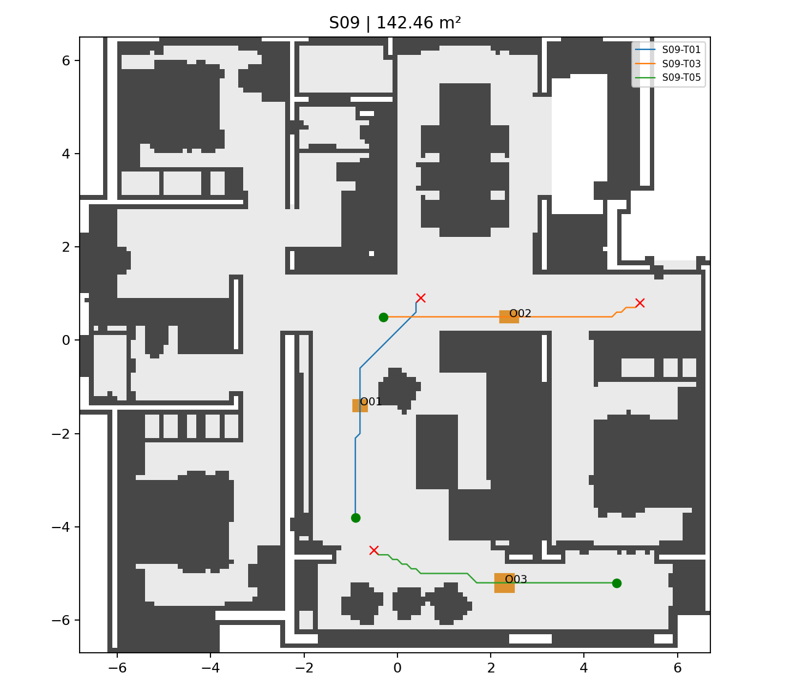
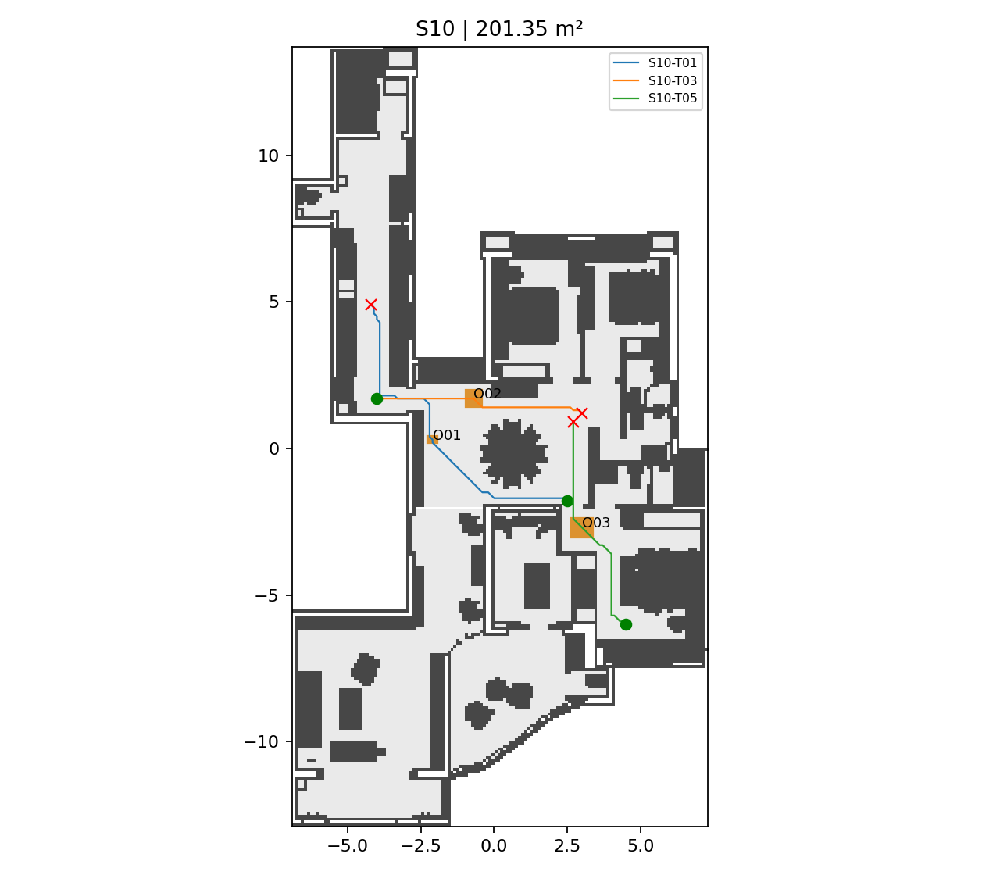

S01 · 57.98 m²
MWAX5JYKTKJZ2AABAAAAAEA8_usd

| O01 | 带盖垃圾桶 | bin_lidded |
| O02 | 脚踏垃圾桶 | bin_pedal |
| O03 | 圆形带盖桶 | bin_round_lidded |
任务配置 · 使用 materialize.py 生成 USD 场景
S02 · 88.69 m²
MVUHLWYKTKJ5EAABAAAAACY8_usd

| O01 | 圆形脚踏桶 | bin_round_pedal |
| O02 | 四腿木凳 | stool_wood_four_leg |
| O03 | 边桌 | table_side |
任务配置 · 使用 materialize.py 生成 USD 场景
S03 · 98.30 m²
MWAX5JYKTKJZ2AABAAAAAAY8_usd

| O01 | 蝴蝶形木凳 | stool_rectangular |
| O02 | 矮圆坐墩 | stool_small |
| O03 | 白色收纳箱 | box_white |
任务配置 · 使用 materialize.py 生成 USD 场景
S04 · 101.03 m²
MV7J6NIKTKJZ2AABAAAAADY8_usd

| O01 | 加固角整理箱 | box_reinforced |
| O02 | 带提手硬箱 | case_handheld |
| O03 | 提手编织篮 | basket_woven |
任务配置 · 使用 materialize.py 生成 USD 场景
S05 · 104.37 m²
MWBGLKQKTKJZ2AABAAAAABI8_usd

| O01 | 矩形提手收纳筐 | basket_rectangular |
| O02 | 软包餐椅 | chair_dining |
| O03 | 带轮办公椅 | chair_wheeled |
任务配置 · 使用 materialize.py 生成 USD 场景
S06 · 108.13 m²
MV7J6NIKTKJZ2AABAAAAAEA8_usd

| O01 | 带盖垃圾桶 | bin_lidded |
| O02 | 脚踏垃圾桶 | bin_pedal |
| O03 | 圆形带盖桶 | bin_round_lidded |
任务配置 · 使用 materialize.py 生成 USD 场景
S07 · 113.75 m²
MVUCSQAKTKJ5EAABAAAAADA8_usd

| O01 | 圆形脚踏桶 | bin_round_pedal |
| O02 | 四腿木凳 | stool_wood_four_leg |
| O03 | 边桌 | table_side |
任务配置 · 使用 materialize.py 生成 USD 场景
S08 · 120.53 m²
MWBGLKQKTKJZ2AABAAAAABQ8_usd

| O01 | 蝴蝶形木凳 | stool_rectangular |
| O02 | 矮圆坐墩 | stool_small |
| O03 | 白色收纳箱 | box_white |
任务配置 · 使用 materialize.py 生成 USD 场景
S09 · 142.46 m²
MVUHLWYKTKJ5EAABAAAAABI8_usd

| O01 | 加固角整理箱 | box_reinforced |
| O02 | 带提手硬箱 | case_handheld |
| O03 | 提手编织篮 | basket_woven |
任务配置 · 使用 materialize.py 生成 USD 场景
S10 · 201.35 m²
MWAX5JYKTKJZ2AABAAAAAAA8_usd

| O01 | 矩形提手收纳筐 | basket_rectangular |
| O02 | 软包餐椅 | chair_dining |
| O03 | 带轮办公椅 | chair_wheeled |
任务配置 · 使用 materialize.py 生成 USD 场景